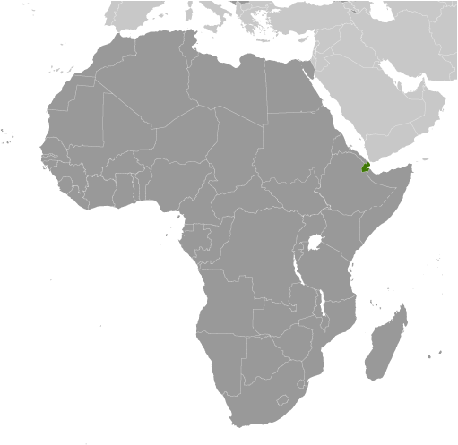
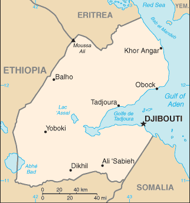
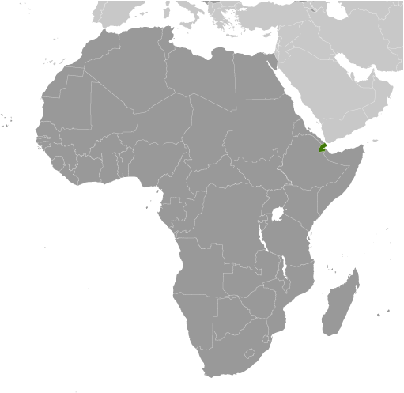
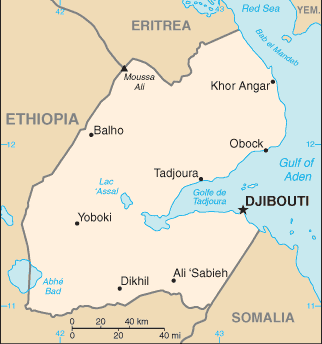

-
Introduction :: Djibouti
-
Background:The French Territory of the Afars and the Issas became Djibouti in 1977. Hassan Gouled APTIDON installed an authoritarian one-party state and proceeded to serve as president until 1999. Unrest among the Afar minority during the 1990s led to a civil war that ended in 2001 with a peace accord between Afar rebels and the Somali Issa-dominated government. In 1999, Djibouti's first multiparty presidential election resulted in the election of Ismail Omar GUELLEH as president; he was reelected to a second term in 2005 and extended his tenure in office via a constitutional amendment, which allowed him to serve a third term in 2011 and begin a fourth term in 2016. Djibouti occupies a strategic geographic location at the intersection of the Red Sea and the Gulf of Aden and serves as an important shipping portal for goods entering and leaving the east African highlands and transshipments between Europe, the Middle East, and Asia. The government holds longstanding ties to France, which maintains a significant military presence in the country, and has strong ties with the US. Djibouti hosts several thousand members of US armed services at US-run Camp Lemonnier.
-
Geography :: Djibouti
-
Location:Eastern Africa, bordering the Gulf of Aden and the Red Sea, between Eritrea and SomaliaGeographic coordinates:11 30 N, 43 00 EMap references:AfricaArea:total: 23,200 sq kmland: 23,180 sq kmwater: 20 sq kmcountry comparison to the world: 151Area - comparative:slightly smaller than New JerseyArea comparison map:
 The World Factbook Field Image ModalAfrica :: Djibouti Print
The World Factbook Field Image ModalAfrica :: Djibouti Print Image Description
Image Descriptionslightly smaller than New Jersey
Land boundaries:total: 528 kmborder countries (3): Eritrea 125 km, Ethiopia 342 km, Somalia 61 kmCoastline:314 kmMaritime claims:territorial sea: 12 nmexclusive economic zone: 200 nmcontiguous zone: 24 nmClimate:desert; torrid, dryTerrain:coastal plain and plateau separated by central mountainsElevation:mean elevation: 430 melevation extremes: -155 m lowest point: Lac Assal2021 highest point: Moussa AliNatural resources:potential geothermal power, gold, clay, granite, limestone, marble, salt, diatomite, gypsum, pumice, petroleumLand use:agricultural land: 73.4% (2011 est.)arable land: 0.1% (2011 est.) / permanent crops: 0% (2011 est.) / permanent pasture: 73.3% (2011 est.)forest: 0.2% (2011 est.)other: 26.4% (2011 est.)Irrigated land:10 sq km (2012)Population distribution:most densely populated areas are in the east; the largest city is Djibouti, with a population over 600,000; no other city in the country has a total population over 50,000Natural hazards:earthquakes; droughts; occasional cyclonic disturbances from the Indian Ocean bring heavy rains and flash floods
volcanism: experiences limited volcanic activity; Ardoukoba (298 m) last erupted in 1978; Manda-Inakir, located along the Ethiopian border, is also historically active
Environment - current issues:inadequate supplies of potable water; water pollution; limited arable land; deforestation (forests threatened by agriculture and the use of wood for fuel); desertification; endangered speciesEnvironment - international agreements:party to: Biodiversity, Climate Change, Climate Change-Kyoto Protocol, Desertification, Endangered Species, Hazardous Wastes, Law of the Sea, Ozone Layer Protection, Ship Pollution, Wetlandssigned, but not ratified: none of the selected agreementsGeography - note:strategic location near world's busiest shipping lanes and close to Arabian oilfields; terminus of rail traffic into Ethiopia; mostly wasteland; Lac Assal (Lake Assal) is the lowest point in Africa and the saltiest lake in the world -
People and Society :: Djibouti
-
Population:884,017 (July 2018 est.)country comparison to the world: 162Nationality:noun: Djiboutian(s)adjective: DjiboutianEthnic groups:Somali 60%, Afar 35%, other 5% (includes French, Arab, Ethiopian, and Italian)Languages:French (official), Arabic (official), Somali, AfarReligions:Muslim 94%, Christian 6%Demographic profile:
Djibouti is a poor, predominantly urban country, characterized by high rates of illiteracy, unemployment, and childhood malnutrition. More than 75% of the population lives in cities and towns (predominantly in the capital, Djibouti). The rural population subsists primarily on nomadic herding. Prone to droughts and floods, the country has few natural resources and must import more than 80% of its food from neighboring countries or Europe. Health care, particularly outside the capital, is limited by poor infrastructure, shortages of equipment and supplies, and a lack of qualified personnel. More than a third of health care recipients are migrants because the services are still better than those available in their neighboring home countries. The nearly universal practice of female genital cutting reflects Djibouti’s lack of gender equality and is a major contributor to obstetrical complications and its high rates of maternal and infant mortality. A 1995 law prohibiting the practice has never been enforced.
Because of its political stability and its strategic location at the confluence of East Africa and the Gulf States along the Gulf of Aden and the Red Sea, Djibouti is a key transit point for migrants and asylum seekers heading for the Gulf States and beyond. Each year some hundred thousand people, mainly Ethiopians and some Somalis, journey through Djibouti, usually to the port of Obock, to attempt a dangerous sea crossing to Yemen. However, with the escalation of the ongoing Yemen conflict, Yemenis began fleeing to Djibouti in March 2015, with almost 20,000 arriving by August 2017. Most Yemenis remain unregistered and head for Djibouti City rather than seeking asylum at one of Djibouti’s three spartan refugee camps. Djibouti has been hosting refugees and asylum seekers, predominantly Somalis and lesser numbers of Ethiopians and Eritreans, at camps for 20 years, despite lacking potable water, food shortages, and unemployment.
Age structure:0-14 years: 30.71% (male 136,191 /female 135,263)15-24 years: 21.01% (male 87,520 /female 98,239)25-54 years: 39.63% (male 145,427 /female 204,927)55-64 years: 4.82% (male 18,967 /female 23,639)65 years and over: 3.83% (male 15,136 /female 18,708) (2018 est.)population pyramid: The World Factbook Field Image ModalAfrica :: Djibouti Print
The World Factbook Field Image ModalAfrica :: Djibouti Print Image DescriptionThis is the population pyramid for Djibouti. A population pyramid illustrates the age and sex structure of a country's population and may provide insights about political and social stability, as well as economic development. The population is distributed along the horizontal axis, with males shown on the left and females on the right. The male and female populations are broken down into 5-year age groups represented as horizontal bars along the vertical axis, with the youngest age groups at the bottom and the oldest at the top. The shape of the population pyramid gradually evolves over time based on fertility, mortality, and international migration trends.
Image DescriptionThis is the population pyramid for Djibouti. A population pyramid illustrates the age and sex structure of a country's population and may provide insights about political and social stability, as well as economic development. The population is distributed along the horizontal axis, with males shown on the left and females on the right. The male and female populations are broken down into 5-year age groups represented as horizontal bars along the vertical axis, with the youngest age groups at the bottom and the oldest at the top. The shape of the population pyramid gradually evolves over time based on fertility, mortality, and international migration trends.
For additional information, please see the entry for Population pyramid on the Definitions and Notes page under the References tab.Dependency ratios:total dependency ratio: 56.5 (2015 est.)youth dependency ratio: 50.1 (2015 est.)elderly dependency ratio: 6.4 (2015 est.)potential support ratio: 15.6 (2015 est.)Median age:total: 24.2 yearsmale: 22.4 yearsfemale: 25.7 years (2018 est.)country comparison to the world: 165Population growth rate:2.13% (2018 est.)country comparison to the world: 42Birth rate:23.3 births/1,000 population (2018 est.)country comparison to the world: 59Death rate:7.5 deaths/1,000 population (2018 est.)country comparison to the world: 109Net migration rate:5.7 migrant(s)/1,000 population (2017 est.)country comparison to the world: 19Population distribution:most densely populated areas are in the east; the largest city is Djibouti, with a population over 600,000; no other city in the country has a total population over 50,000Urbanization:urban population: 77.8% of total population (2018)rate of urbanization: 1.67% annual rate of change (2015-20 est.)Major urban areas - population:562,000 DJIBOUTI (capital) (2018)Sex ratio:at birth: 1.02 male(s)/female (2017 est.)0-14 years: 1.01 male(s)/female (2017 est.)15-24 years: 0.89 male(s)/female (2017 est.)25-54 years: 0.71 male(s)/female (2017 est.)55-64 years: 0.85 male(s)/female (2017 est.)65 years and over: 0.82 male(s)/female (2017 est.)total population: 0.84 male(s)/female (2017 est.)Maternal mortality rate:229 deaths/100,000 live births (2015 est.)country comparison to the world: 46Infant mortality rate:total: 44.3 deaths/1,000 live births (2018 est.)male: 50.9 deaths/1,000 live births (2018 est.)female: 37.5 deaths/1,000 live births (2018 est.)country comparison to the world: 39Life expectancy at birth:total population: 64 years (2018 est.)male: 61.4 years (2018 est.)female: 66.6 years (2018 est.)country comparison to the world: 191Total fertility rate:2.27 children born/woman (2018 est.)country comparison to the world: 90Contraceptive prevalence rate:19% (2012)Health expenditures:10.6% of GDP (2014)country comparison to the world: 18Physicians density:0.23 physicians/1,000 population (2014)Hospital bed density:1.4 beds/1,000 population (2014)Drinking water source:improved: urban: 97.4% of populationrural: 64.7% of populationtotal: 90% of populationunimproved: urban: 2.6% of populationrural: 35.3% of populationtotal: 10% of population (2015 est.)Sanitation facility access:improved: urban: 59.8% of population (2015 est.)rural: 5.1% of population (2015 est.)total: 47.4% of population (2015 est.)unimproved: urban: 40.2% of population (2015 est.)rural: 94.9% of population (2015 est.)total: 52.6% of population (2015 est.)HIV/AIDS - adult prevalence rate:1.3% (2017 est.)country comparison to the world: 37HIV/AIDS - people living with HIV/AIDS:9,100 (2017 est.)country comparison to the world: 101HIV/AIDS - deaths:<1000 (2017 est.)Major infectious diseases:degree of risk: high (2016)food or waterborne diseases: bacterial and protozoal diarrhea, hepatitis A, and typhoid fever (2016)vectorborne diseases: dengue fever (2016)Obesity - adult prevalence rate:13.5% (2016)country comparison to the world: 131Children under the age of 5 years underweight:29.8% (2012)country comparison to the world: 9Education expenditures:4.5% of GDP (2010)country comparison to the world: 93School life expectancy (primary to tertiary education):total: 6 years (2011)male: 7 years (2011)female: 6 years (2011) -
Government :: Djibouti
-
Country name:conventional long form: Republic of Djibouticonventional short form: Djiboutilocal long form: Republique de Djibouti/Jumhuriyat Jibutilocal short form: Djibouti/Jibutiformer: French Somaliland, French Territory of the Afars and Issasetymology: the country name derives from the capital city of DjiboutiGovernment type:semi-presidential republicCapital:name: Djiboutigeographic coordinates: 11 35 N, 43 09 Etime difference: UTC+3 (8 hours ahead of Washington, DC, during Standard Time)Administrative divisions:6 districts (cercles, singular - cercle); Ali Sabieh, Arta, Dikhil, Djibouti, Obock, TadjourahIndependence:27 June 1977 (from France)National holiday:Independence Day, 27 June (1977)Constitution:history: approved by referendum 4 September 1992 (2017)amendments: proposed by the president of the republic or by the National Assembly; Assembly consideration of proposals requires assent by at least one-third of the membership; passage requires a simple majority vote by the Assembly and approval by simple majority vote in a referendum; the president can opt to bypass a referendum if adopted by at least two-thirds majority vote of the Assembly; constitutional articles on the sovereignty of Djibouti, its republican form of government, and its pluralist form of democracy cannot by amended; amended 2006, 2008, 2010 (2017)Legal system:mixed legal system based primarily on the French civil code (as it existed in 1997), Islamic religious law (in matters of family law and successions), and customary lawInternational law organization participation:accepts compulsory ICJ jurisdiction with reservations; accepts ICCt jurisdictionCitizenship:citizenship by birth: nocitizenship by descent only: the mother must be a citizen of Djiboutidual citizenship recognized: noresidency requirement for naturalization: 10 yearsSuffrage:18 years of age; universalJudicial branch:highest courts: Supreme Court or Cour Supreme (consists of NA magistrates); Constitutional Council (consists of 6 magistrates)judge selection and term of office: Supreme Court magistrates appointed by the president with the advice of the Superior Council of the Magistracy or CSM, a 10-member body consisting of 4 judges, 3 members (non parliamentarians and judges) appointed by the president, and 3 appointed by the National Assembly president or speaker; magistrates appointed for life with retirement at age 65; Constitutional Council magistrate appointments - 2 by the president of the republic, 2 by the president of the National Assembly, and 2 by the CSM; magistrates appointed for 8-year, non-renewable termssubordinate courts: High Court of Appeal; 5 Courts of First Instance; customary courts; State Court (replaced sharia courts in 2003)Executive branch:chief of state: President Ismail Omar GUELLEH (since 8 May 1999)head of government: Prime Minister Abdoulkader Kamil MOHAMED (since 1 April 2013)cabinet: Council of Ministers appointed by the prime ministerelections/appointments: president directly elected by absolute majority popular vote in 2 rounds if needed for a 5-year term; election last held on 8 April 2016 (next to be held by 2021); prime minister appointed by the presidentelection results: Ismail Omar GUELLEH reelected president for a fourth term; percent of vote - Ismail Omar GUELLEH (RPP) 87%, Omar Elmi KHAIREH (CDU) 7.3%, other 5.6%Legislative branch:description: unicameral National Assembly or Assemblee Nationale, formerly the Chamber of Deputies (65 seats; members directly elected in multi-seat constituencies by party-list proportional representation vote; members serve 5-year terms)elections: last held on 23 February 2018 (next to be held in February 2023)election results: percent of vote by party - NA; seats by party - UMP 57, UDJ-PDD 7, CDU 1; composition - men 58, women 7, percent of women 10.8%Political parties and leaders:Center for United Democrats or CDU [Omar Elmi KHAIREH, chairman]
Democratic Renewal Party or PRD [Abdillahi HAMARITEH]
Djibouti Development Party or PDD [Mohamed Daoud CHEHEM]
Front for Restoration of Unity and Democracy (Front pour la Restauration de l'Unite Democratique) or FRUD [Ali Mohamed DAOUD]
Movement for Democratic Renewal and Development [Daher Ahmed FARAH]
Movement for Development and Liberty or MoDel [Ismail Ahmed WABERI]
National Democratic Party or PND [Aden Robleh AWALEH]
People's Rally for Progress or RPP [Ismail Omar GUELLEH] (governing party)
Peoples Social Democratic Party or PPSD [Hasna Moumin BAHDON]
Republican Alliance for Democracy or ARD
Union for a Presidential Majority or UMP (coalition includes RPP, FRUD, PND, PPSD)
Union for Democracy and Justice or UDJ [Ilya Ismail GUEDI Hared]
Union for National Salvation or USN [Ahmed Youssouf HOUMED] (coalition includes ARD, MoDel, MRD, PDD, PND, UDJ)International organization participation:ACP, AfDB, AFESD, AMF, AU, CAEU (candidates), COMESA, FAO, G-77, IBRD, ICAO, ICCt, ICRM, IDA, IDB, IFAD, IFC, IFRCS, IGAD, ILO, IMF, IMO, Interpol, IOC, IOM, IPU, ITU, ITUC (NGOs), LAS, MIGA, MINURSO, NAM, OIC, OIF, OPCW, UN, UNCTAD, UNESCO, UNHCR, UNIDO, UNWTO, UPU, WCO, WFTU (NGOs), WHO, WIPO, WMO, WTODiplomatic representation in the US:chief of mission: Ambassador Mohamed Said DOUALEH (28 December 2016)chancery: 1156 15th Street NW, Suite 515, Washington, DC 20005telephone: [1] (202) 331-0270FAX: [1] (202) 331-0302Diplomatic representation from the US:chief of mission: Ambassador Larry Edward ANDRE, Jr. (since 20 November 2017)embassy: Lot 350-B, Haramoussmailing address: B.P. 185, Djiboutitelephone: [253] 21 45 30 00FAX: [253] 21 45 31 29Flag description:two equal horizontal bands of light blue (top) and light green with a white isosceles triangle based on the hoist side bearing a red five-pointed star in the center; blue stands for sea and sky and the Issa Somali people; green symbolizes earth and the Afar people; white represents peace; the red star recalls the struggle for independence and stands for unityNational symbol(s):red star; national colors: light blue, green, white, redNational anthem:name: "Jabuuti" (Djibouti)lyrics/music: Aden ELMI/Abdi ROBLEHnote: adopted 1977
-
Economy :: Djibouti
-
Economy - overview:
Djibouti's economy is based on service activities connected with the country's strategic location as a deepwater port on the Red Sea. Three-fourths of Djibouti's inhabitants live in the capital city; the remainder are mostly nomadic herders. Scant rainfall and less than 4% arable land limits crop production to small quantities of fruits and vegetables, and most food must be imported.
Djibouti provides services as both a transit port for the region and an international transshipment and refueling center. Imports, exports, and reexports represent 70% of port activity at Djibouti's container terminal. Reexports consist primarily of coffee from landlocked neighbor Ethiopia. Djibouti has few natural resources and little industry. The nation is, therefore, heavily dependent on foreign assistance to support its balance of payments and to finance development projects. An official unemployment rate of nearly 40% - with youth unemployment near 80% - continues to be a major problem. Inflation was a modest 3% in 2014-2017, due to low international food prices and a decline in electricity tariffs.
Djibouti’s reliance on diesel-generated electricity and imported food and water leave average consumers vulnerable to global price shocks, though in mid-2015 Djibouti passed new legislation to liberalize the energy sector. The government has emphasized infrastructure development for transportation and energy and Djibouti – with the help of foreign partners, particularly China – has begun to increase and modernize its port capacity. In 2017, Djibouti opened two of the largest projects in its history, the Doraleh Port and Djibouti-Addis Ababa Railway, funded by China as part of the "Belt and Road Initiative," which will increase the country’s ability to capitalize on its strategic location.
GDP (purchasing power parity):$3.64 billion (2017 est.)$3.411 billion (2016 est.)$3.203 billion (2015 est.)note: data are in 2017 dollars
country comparison to the world: 183GDP (official exchange rate):$2.029 billion (2017 est.) (2017 est.)GDP - real growth rate:6.7% (2017 est.)6.5% (2016 est.)6.5% (2015 est.)country comparison to the world: 26GDP - per capita (PPP):$3,600 (2017 est.)$3,400 (2016 est.)$3,300 (2015 est.)note: data are in 2017 dollars
country comparison to the world: 185Gross national saving:22.3% of GDP (2017 est.)38.1% of GDP (2016 est.)19% of GDP (2015 est.)country comparison to the world: 81GDP - composition, by end use:household consumption: 56.5% (2017 est.)government consumption: 29.2% (2017 est.)investment in fixed capital: 41.8% (2017 est.)investment in inventories: 0.3% (2017 est.)exports of goods and services: 38.6% (2017 est.)imports of goods and services: -66.4% (2017 est.)GDP - composition, by sector of origin:agriculture: 2.4% (2017 est.)industry: 17.3% (2017 est.)services: 80.2% (2017 est.)Agriculture - products:fruits, vegetables; goats, sheep, camels, animal hidesIndustries:construction, agricultural processing, shippingIndustrial production growth rate:2.7% (2017 est.)country comparison to the world: 112Labor force:294,600 (2012)country comparison to the world: 163Labor force - by occupation:agriculture: NAindustry: NAservices: NAUnemployment rate:40% (2017 est.)60% (2014 est.)country comparison to the world: 213Population below poverty line:23% (2015 est.)note: percent of population below $1.25 per day at purchasing power parity
Distribution of family income - Gini index:40.9 (2002)country comparison to the world: 60Budget:revenues: 717 million (2017 est.)expenditures: 899.2 million (2017 est.)Taxes and other revenues:35.3% (of GDP) (2017 est.)country comparison to the world: 62Budget surplus (+) or deficit (-):-9% (of GDP) (2017 est.)country comparison to the world: 205Public debt:31.8% of GDP (2017 est.)33.7% of GDP (2016 est.)country comparison to the world: 161Fiscal year:calendar yearInflation rate (consumer prices):0.7% (2017 est.)2.7% (2016 est.)country comparison to the world: 36Commercial bank prime lending rate:11.3% (31 December 2017 est.)11.45% (31 December 2016 est.)country comparison to the world: 72Stock of narrow money:$1.475 billion (31 December 2017 est.)$1.361 billion (31 December 2016 est.)country comparison to the world: 143Stock of broad money:$1.475 billion (31 December 2017 est.)$1.361 billion (31 December 2016 est.)country comparison to the world: 151Stock of domestic credit:$673.1 million (31 December 2017 est.)$659.4 million (31 December 2016 est.)country comparison to the world: 172Current account balance:-$280 million (2017 est.)-$178 million (2016 est.)country comparison to the world: 102Exports:$161.4 million (2017 est.)$139.9 million (2016 est.)country comparison to the world: 192Exports - partners:Ethiopia 38.8%, Somalia 17.1%, Qatar 9.1%, Brazil 8.9%, Yemen 4.9%, US 4.6% (2017)Exports - commodities:reexports, hides and skins, scrap metalImports:$726.4 million (2017 est.)$705.2 million (2016 est.)country comparison to the world: 191Imports - commodities:foods, beverages, transport equipment, chemicals, petroleum products, clothingImports - partners:UAE 25%, France 15.2%, Saudi Arabia 11%, China 9.6%, Ethiopia 6.8%, Yemen 4.6% (2017)Reserves of foreign exchange and gold:$547.7 million (31 December 2017 est.)$398.5 million (31 December 2016 est.)country comparison to the world: 148Debt - external:$1.954 billion (31 December 2017 est.)$1.519 billion (31 December 2016 est.)country comparison to the world: 153Stock of direct foreign investment - at home:$1.47 billion (31 December 2017 est.)$1.483 billion (31 December 2016 est.)country comparison to the world: 121Exchange rates:Djiboutian francs (DJF) per US dollar -177.7 (2017 est.)177.72 (2016 est.)177.72 (2015 est.)177.72 (2014 est.)177.72 (2013 est.) -
Energy :: Djibouti
-
Electricity access:population without electricity: 400,000 (2013)electrification - total population: 50% (2013)electrification - urban areas: 61% (2013)electrification - rural areas: 14% (2013)Electricity - production:405.5 million kWh (2016 est.)country comparison to the world: 170Electricity - consumption:377.1 million kWh (2016 est.)country comparison to the world: 177Electricity - exports:0 kWh (2016 est.)country comparison to the world: 127Electricity - imports:0 kWh (2016 est.)country comparison to the world: 141Electricity - installed generating capacity:130,300 kW (2016 est.)country comparison to the world: 175Electricity - from fossil fuels:100% of total installed capacity (2016 est.)country comparison to the world: 7Electricity - from nuclear fuels:0% of total installed capacity (2017 est.)country comparison to the world: 78Electricity - from hydroelectric plants:0% of total installed capacity (2017 est.)country comparison to the world: 168Electricity - from other renewable sources:0% of total installed capacity (2017 est.)country comparison to the world: 185Crude oil - production:0 bbl/day (2017 est.)country comparison to the world: 126Crude oil - exports:0 bbl/day (2015 est.)country comparison to the world: 114Crude oil - imports:0 bbl/day (2015 est.)country comparison to the world: 117Crude oil - proved reserves:0 bbl (1 January 2018 est.)country comparison to the world: 123Refined petroleum products - production:0 bbl/day (2015 est.)country comparison to the world: 136Refined petroleum products - consumption:6,360 bbl/day (2016 est.)country comparison to the world: 170Refined petroleum products - exports:403 bbl/day (2015 est.)country comparison to the world: 112Refined petroleum products - imports:6,692 bbl/day (2015 est.)country comparison to the world: 161Natural gas - production:0 cu m (2017 est.)country comparison to the world: 123Natural gas - consumption:0 cu m (2017 est.)country comparison to the world: 139Natural gas - exports:0 cu m (2017 est.)country comparison to the world: 94Natural gas - imports:0 cu m (2017 est.)country comparison to the world: 116Natural gas - proved reserves:0 cu m (1 January 2014 est.)country comparison to the world: 127Carbon dioxide emissions from consumption of energy:950,200 Mt (2017 est.)country comparison to the world: 171
-
Communications :: Djibouti
-
Telephones - fixed lines:total subscriptions: 36,582 (2017 est.)subscriptions per 100 inhabitants: 4 (2017 est.)country comparison to the world: 163Telephones - mobile cellular:total subscriptions: 373,052 (2017 est.)subscriptions per 100 inhabitants: 43 (2017 est.)country comparison to the world: 175Telephone system:general assessment: telephone facilities in the city of Djibouti are adequate, as are the microwave radio relay connections to outlying areas of the country; Djibouti is one of the few remaining countries in which the national telco, Djibouti Telecom (DT), has a monopoly on all telecom services, including fixed lines, mobile, internet and broadband; the lack of competition has meant that the market has not lived up to its potential (2017)domestic: Djibouti Telecom (DT) is the sole provider of telecommunications services and utilizes mostly a microwave radio relay network; fiber-optic cable is installed in the capital; rural areas connected via wireless local loop radio systems; mobile cellular coverage is primarily limited to the area in and around Djibouti city; 4 per 100 fixed-line, 43 per 100 moblie-cellular (2017)international: country code - 253; landing point for the SEA-ME-WE-3 and EASSy fiber-optic submarine cable systems providing links to Asia, the Middle East, Europe and North America; satellite earth stations - 2 (1 Intelsat - Indian Ocean and 1 Arabsat); work starts on the PEACE submarine cable linking Djibouti with Pakistan; Djibouti Telecom joins six other regional telcos to build the DARE submarine cable system, is contracted to manage the Australia West Cable landing; Djibouti Internet Exchange (DjIX) joins the African IXP Association; Djibouti Telecom signs an agreement to peer IP traffic through France-IX's IXPs in Paris and Marseille; growth in the mobile and internet sectors accelerates with 3G launch (2017)Broadcast media:state-owned Radiodiffusion-Television de Djibouti operates the sole terrestrial TV station, as well as the only 2 domestic radio networks; no private TV or radio stations; transmissions of several international broadcasters are available (2007)Internet country code:.djInternet users:total: 111,212 (July 2016 est.)percent of population: 13.1% (July 2016 est.)country comparison to the world: 176Broadband - fixed subscriptions:total: 24,389 (2017 est.)subscriptions per 100 inhabitants: 3 (2017 est.)country comparison to the world: 147
-
Transportation :: Djibouti
-
National air transport system:number of registered air carriers: 2 (2015)inventory of registered aircraft operated by air carriers: 4 (2015)Civil aircraft registration country code prefix:J2 (2016)Airports:13 (2013)country comparison to the world: 151Airports - with paved runways:total: 3 (2017)over 3,047 m: 1 (2017)2,438 to 3,047 m: 1 (2017)1,524 to 2,437 m: 1 (2017)Airports - with unpaved runways:total: 10 (2013)1,524 to 2,437 m: 1 (2013)914 to 1,523 m: 7 (2013)under 914 m: 2 (2013)Railways:total: 97 km (Djibouti segment of the 756 km Addis Ababa-Djibouti railway) (2017)standard gauge: 97 km 1.435-m gauge (2017)country comparison to the world: 127Roadways:total: 3,065 km (2000)paved: 1,379 km (2000)unpaved: 1,686 km (2000)country comparison to the world: 165Merchant marine:total: 18 (2017)by type: oil tanker 2, other 16 (2017)country comparison to the world: 141Ports and terminals:major seaport(s): Djibouti
-
Military and Security :: Djibouti
-
Military branches:Djibouti Armed Forces (Forces Armees Djiboutiennes, FAD): Djibouti National Army (includes Navy, Djiboutian Air Force (Force Aerienne Djiboutienne, FAD), National Gendarmerie (GN)) (2013)Military service age and obligation:18 years of age for voluntary military service; 16-25 years of age for voluntary military training; no conscription (2012)Maritime threats:the International Maritime Bureau reports offshore waters in the Red Sea and Gulf of Aden remain a high risk for piracy; the presence of several naval task forces in the Gulf of Aden and additional anti-piracy measures on the part of ship operators, including the use of on-board armed security teams, contributed to the drop in incidents; there were three incidents in the Gulf of Aden and one in the Red Sea in 2017; Operation Ocean Shield, the NATO/EUNAVFOR naval task force established in 2009 to combat Somali piracy, concluded its operations in December 2016 as a result of the drop in reported incidents over the last few years; the EU naval mission, Operation ATALANTA, continues its operations in the Gulf of Aden and Indian Ocean through 2020; naval units from Japan, India, and China also operate in conjuction with EU forces; China has established a logistical base in Djibouti to support its deployed naval units in the Horn of Africa
-
Terrorism :: Djibouti
-
Terrorist groups - foreign based:al-Shabaab:
aim(s): punish Djibouti for participating in the African Union Mission in Somalia; compel Djibouti to withdraw troops from Somalia
area(s) of operation: maintains minimal operational presence (April 2018) -
Transnational Issues :: Djibouti
-
Disputes - international:Djibouti maintains economic ties and border accords with "Somaliland" leadership while maintaining some political ties to various factions in SomaliaKuwait is chief investor in the 2008 restoration and upgrade of the Ethiopian-Djibouti rail linkin 2008, Eritrean troops moved across the border on Ras Doumera peninsula and occupied Doumera Island with undefined sovereignty in the Red SeaRefugees and internally displaced persons:refugees (country of origin): 19,636 (Yemen) (2017), 12,139 (Somalia) (2018)Trafficking in persons:current situation: Djibouti is a transit, source, and destination country for men, women, and children subjected to forced labor and sex trafficking; economic migrants from East Africa en route to Yemen and other Middle East locations are vulnerable to exploitation in Djibouti; some women and girls may be forced into domestic servitude or prostitution after reaching Djibouti City, the Ethiopia-Djibouti trucking corridor, or Obock – the main crossing point into Yemen; Djiboutian and foreign children may be forced to beg, to work as domestic servants, or to commit theft and other petty crimestier rating: Tier 2 Watch List – Djibouti does not fully comply with the minimum standards for the elimination of trafficking; however, it is making significant efforts to do so; in 2014, Djibouti was granted a waiver from an otherwise required downgrade to Tier 3 because its government has a written plan that, if implemented would constitute making significant efforts to bring itself into compliance with the minimum standards for the elimination of trafficking; one forced labor trafficker was convicted in 2014 but received a suspended sentence inadequate to deter trafficking; authorities did not investigate or prosecute any other forced labor crimes, any sex trafficking offenses, or any officials complicit in human trafficking, and remained limited in their ability to recognize or protect trafficking victims; official round-ups, detentions, and deportations of non-Djiboutian residents, including children without screening for trafficking victims remained routine; the government did not provide care to victims but supported local NGOs operating centers that assisted victims (2015)
Africa ::
Djibouti